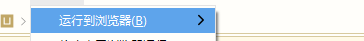
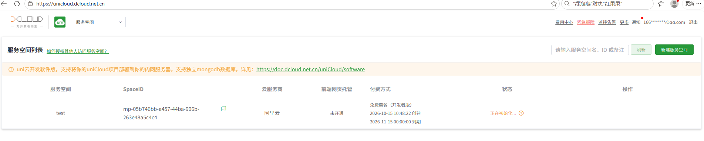
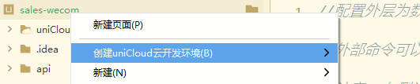
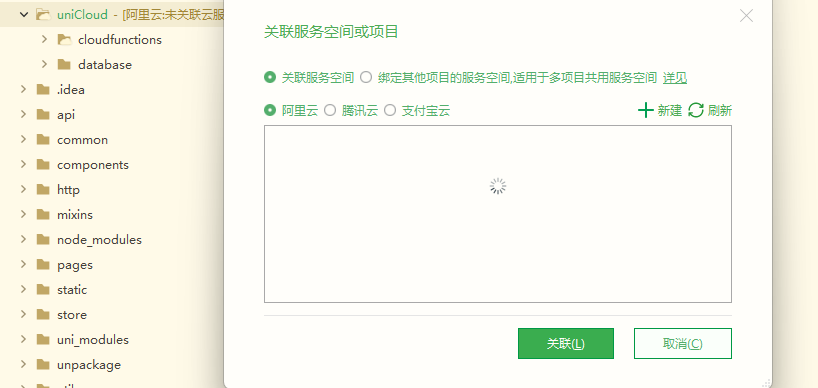
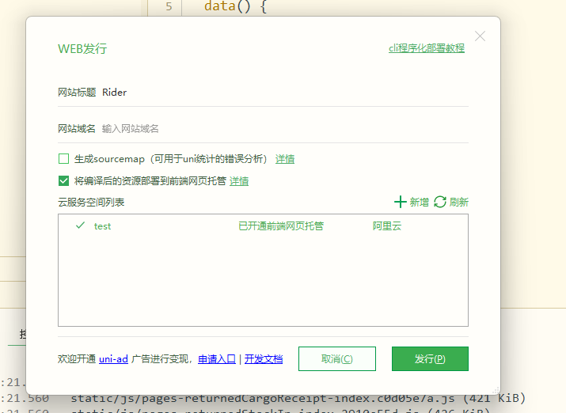

打包后的 Web 内容（部署测试）
一、产出路径
| 项目类型 | 打包产物路径 | 说明 |
|---|---|---|
| uniapp 项目 → H5 | HBuilderX：unpackage/dist/build/h5；CLI 项目：dist/build/h5 | 发行 H5 后自动生成，入口为 index.html |
| 常规 Web 项目（HTML/CSS/JS） | 项目根目录本身即是产物 | 无需构建，直接部署静态文件 |
| Vue / React 等 SPA 打包后的 | Vite / Vue CLI：dist；CRA（react-scripts）：build | 一个 index.html 入口 + 静态资源 |
二、本地访问
（1）uniapp 项目 → H5

- HBuilderX 内运行到浏览器，会自动编译为 H5，并使用 IDEA/HBX 自带的 Web 服务，可以直接访问和调试。
- CLI 项目执行
npm run dev:h5启动本地开发服务。
（2）常规 Web 项目（HTML/CSS/JS）
- 最简单：直接双击
index.html，以file://协议打开（部分受 CORS / 模块加载限制的场景不可用）。 - 更推荐：用本地 HTTP 服务打开：
- IDEA：内置 Built-in Server（右上角浏览器图标 / Open in Browser）
- VS Code：Live Server 插件
- 命令行：
npx serve .或python -m http.server 8080
（3）Vue / React 等 SPA 打包后的
- 开发期：VS Code / IDEA 等会有编译和自带的 Web 服务，供访问和测试（
npm run dev/npm run start）。 - 打包产物本地预览：
- Vite：
npm run preview - 通用：
npx serve dist（或把产物目录用 IDE 内置 Web 服务打开）
- Vite：
三、把本地服务映射到公网（内网穿透）
做内网穿透：把 🟢服务地址 通过第三方服务映射成一个带 TLS 的公网域名，让其他人也可以访问。
注意三类资源：
- SPA 的路由
- 资源地址（CSS、JS 这类）
- 接口服务地址
| 工具 | 特点 |
|---|---|
| cpolar | 国内服务，访问稳定；免费版 4 条隧道、1M 带宽、不限流量，支持 http/https（会同时生成 https 地址），详见下文「以 cpolar 为例」 |
| natapp | 免费 2 条隧道，解压后在命令行跑 natapp -authtoken=你的authtoken |
| ngrok | 免费版自带 1 个固定静态域名（xxx.ngrok-free.app），改动少；但国内网络访问不稳定 |
四、公网部署
（1）uniapp 项目 → H5
见下方 方案一：HBuilderX 上传 H5 到 DCloud uniCloud 免费前端托管。
（2）常规 Web 项目（HTML/CSS/JS）
把整个目录上传到任意免费静态托管即可：
- GitHub Pages / Gitee Pages
- Vercel / Netlify
拿到公网 URL 后直接访问。纯静态、无路由和服务端依赖，基本不会踩坑。
GitHub Pages 的具体操作见下方 方案二：GitHub Pages 托管。
（3）Vue / React 等 SPA 打包后的
把打包出来的产物目录上传到临时静态网站，拿到公网 URL，手机直接打开。可选免费工具：
- DCloud 的免费空间（HBX 内置上传）
- Vercel、Netlify、Gitee Pages、GitHub Pages
优点：安卓、iPhone、微信内置浏览器、抖音 webview 都能测，和线上环境完全一致。
⚠️ 重点测试：微信 / 抖音内嵌打开（短剧 H5 投放，很多问题只在 webview 里复现）。
history 路由注意：如果 SPA 用的是 history 模式，静态托管不认识
/xxx这类路径会返回 404，需要把所有路径重写到index.html：
- Netlify：根目录加
_redirects文件，内容/* /index.html 200- Vercel：加
vercel.json的rewrites规则- hash 模式（
/#/...）则无此问题。
方案一：HBuilderX 上传 H5 到 DCloud uniCloud 免费前端托管（内置上传）
这个就是 HBX 内置的免费测试空间，uniCloud 阿里云版每个账号有 1 个免费服务空间，用来测试 H5 非常适合，产物是
bspapp.com的公网链接，手机、抖音 webview、微信浏览器直接打开测试，刚好适配短剧 H5 测试。
⚠️ 腾讯云版没有免费空间，选阿里云。
步骤 1：创建 uniCloud 免费阿里云服务空间
- 浏览器打开
unicloud.dcloud.net.cn - 登录同 DCloud 账号 → 新建服务空间，服务商选择【阿里云】（只有阿里云有免费版）
- 空间名称随便填，创建，等待初始化几十秒

- 创建成功，回到 HBX


步骤 2：在 HBX 内置上传 H5 打包产物（重点）

发行后，会提示访问地址：https://static-mp-05b746bb-a457-44ba-906b-263e48a5c4c4.next.bspapp.com/
步骤 3：可能遇到的问题 —— Mixed Content（混合内容）拦截
报错示例：
Mixed Content: The page at
'https://static-mp-05b746bb-a457-44ba-906b-263e48a5c4c4.next.bspapp.com/#/pages/workDesp/index'
was loaded over HTTPS, but requested an insecure XMLHttpRequest endpoint
'http://192.168.0.236:32000/api/blade-auth/oauth/token?...'.
This request has been blocked; the content must be served over HTTPS.原因：HTTPS 页面（uniCloud 托管）发起 HTTP 的 XHR 请求，浏览器一律按混合内容直接拦截。setting.js#L19 确认了根因：
prodUrl: "http://192.168.0.236:32000",
// 注意！正式线上使用相对地址，云托管测试，使用绝对地址：http://192.168.0.236:32000解决办法：内网穿透。把 192.168.0.236:32000 通过第三方服务映射成一个带 TLS 的公网域名，前端改为访问它，混合内容问题即消失。
以 cpolar 为例（免费版 4 条隧道、1M 带宽、不限流量，支持 http/https）：
-
注册：访问 cpolar 官网), 注册账号，下载 Windows 客户端并安装
-
认证 token：官网后台「验证」页复制 token，命令行执行（GUI 版登录后会自动写入）：
cpolar authtoken <你的token值> -
创建隧道：浏览器打开本地管理界面
http://127.0.0.1:9200→ 左侧「隧道管理 → 隧道列表」→ 创建隧道，填：- 协议：
http（cpolar 会自动生成 https 访问地址） - 本地地址：
127.0.0.1（服务装在本机）或192.168.0.236 - 本地端口：
32000 - 域名：免费版用随机二级域名；有固定域名选项就用固定的（很重要，见下）
- 协议：
-
启动隧道，拿到公网地址，形如
https://xxxx.cpolar.cn -
验证：手机浏览器能打开
https://xxxx.cpolar.cn（不报证书错误）即可 -
改前端（
setting.js#L19），不要带/api，代码会自动拼：prodUrl: "https://xxxx.cpolar.cn", -
重新打包 H5 → 发布到 uniCloud → 手机访问验证
路径转发：cpolar 默认原样转发完整路径，所以 /api/... 前缀会被保留，网关无需改动。
ps：MDN 的混合内容文档明确写着：“Safari does not allow any mixed content.” —— Safari 对混合内容是一律阻止、且不提供豁免，不像 Chrome / Edge 有站点级的「不安全内容」允许列表。
方案二：GitHub Pages 托管
GitHub Pages 是 GitHub 自带的免费静态托管，每个公开仓库都能开一个站点（免费账号私有仓库不支持 Pages）。
产物地址：https://<用户名>.github.io/<仓库名>/；特殊仓库名<用户名>.github.io的站点例外，部署在根路径/。
⚠️ 大陆访问 GitHub 不稳定，适合自测或海外用户；面向国内分发优先用方案一（uniCloud）。
步骤 1：创建仓库并上传打包产物
- GitHub 上新建一个 Public 仓库（如
my-h5） - 把打包产物（
dist/unpackage/dist/build/h5里的内容，不是 dist 目录本身）推到仓库：
git init
git add .
git commit -m "deploy"
git branch -M main
git remote add origin https://github.com/<用户名>/my-h5.git
git push -u origin main更省事的做法：在打包机器上直接执行
npx gh-pages -d dist，一行命令把dist目录发布到gh-pages分支（也可写进package.json的 scripts："deploy": "vite build && gh-pages -d dist"）。
步骤 2：开启 Pages
仓库 Settings → Pages → Build and deployment：
- Source：
Deploy from a branch - Branch：
main+/ (root)（用gh-pages分支部署的则选gh-pages） - Save，等待 1~2 分钟部署完成
步骤 3：修正资源 base 路径（重点，最容易 404 的地方）
项目站点部署在 /<仓库名>/ 子路径下，打包时资源如果按 / 绝对路径引用（如 /assets/index-xxx.js），线上会全部 404，必须先把 base 配成仓库名再打包：
| 项目类型 | 配置位置 |
|---|---|
| Vite | vite.config 里 base: '/<仓库名>/' |
| Vue CLI（webpack） | vue.config.js 里 publicPath: '/<仓库名>/' |
| CRA（react-scripts） | package.json 里 "homepage": "https://<用户名>.github.io/<仓库名>" |
| uniapp → H5 | manifest.json → 「Web 配置 → H5 配置 → 路由模式」的 base 填 /<仓库名>/ |
改完重新打包再上传。
步骤 4：SPA 路由模式的坑
- hash 模式（
/#/...）：GitHub Pages 上可正常使用，推荐测试场景直接用 hash。 - history 模式：GitHub Pages 是纯静态、无法配置服务端重写，刷新非根路径必 404。官方文档给的兜底方案是把
index.html复制一份命名为404.html一起部署（利用 404 回退加载应用），能跑但不优雅；正式项目建议换 Vercel/Netlify（见上文 rewrite 配置）。
步骤 5：验证
手机浏览器打开 https://<用户名>.github.io/<仓库名>/：
- 页面能渲染、无 404 资源（DevTools → Network 确认）
- 首次部署后 DNS 生效可能要等几分钟，
https证书自动签发
进阶：Settings → Pages → Custom domain 可绑定自己的域名，勾选 Enforce HTTPS 强制 https；配合仓库里的
CNAME文件记录域名。